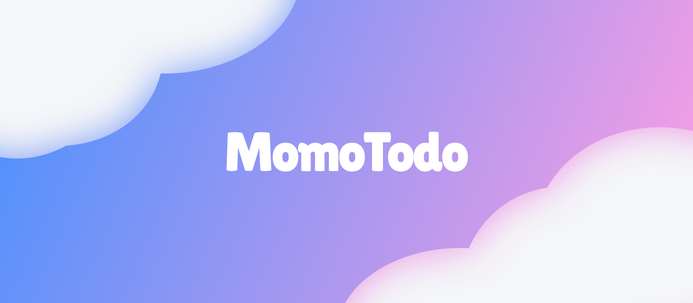
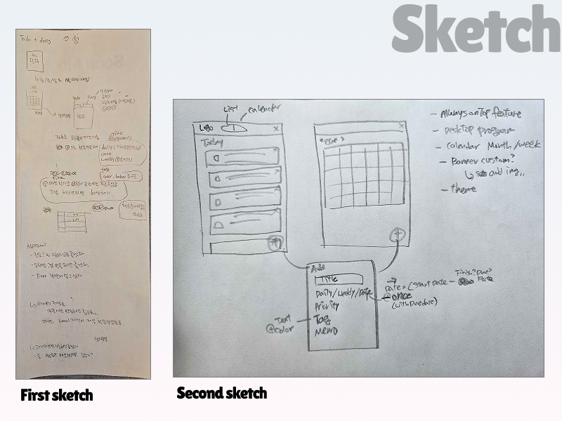
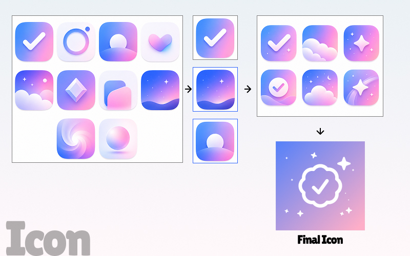
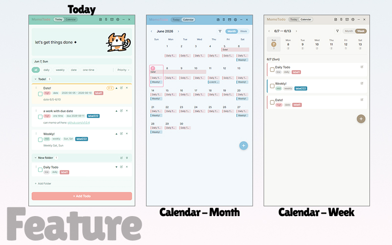
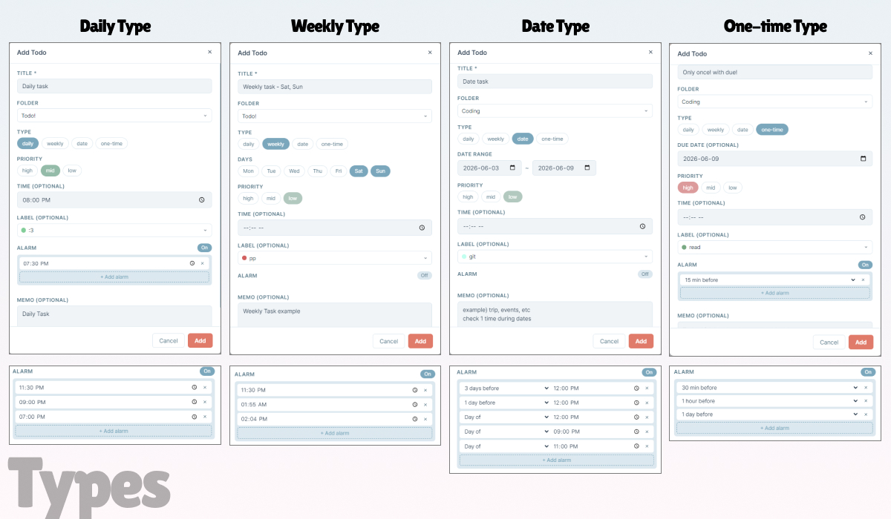
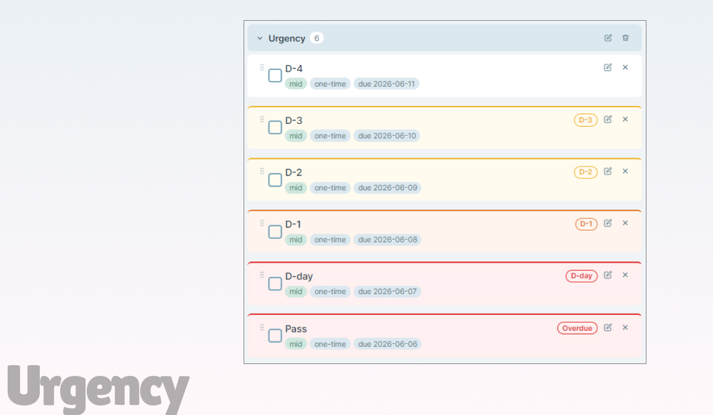
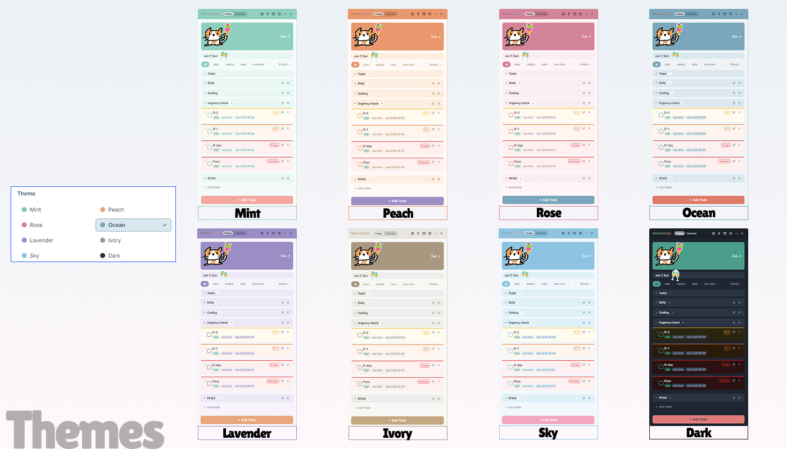
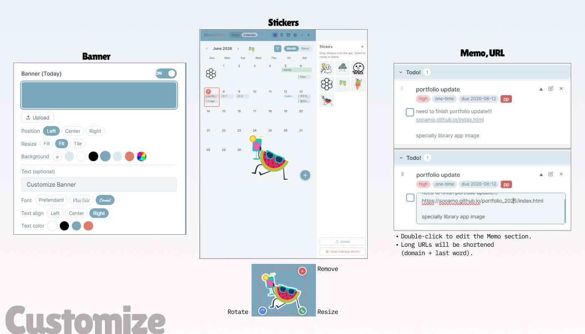
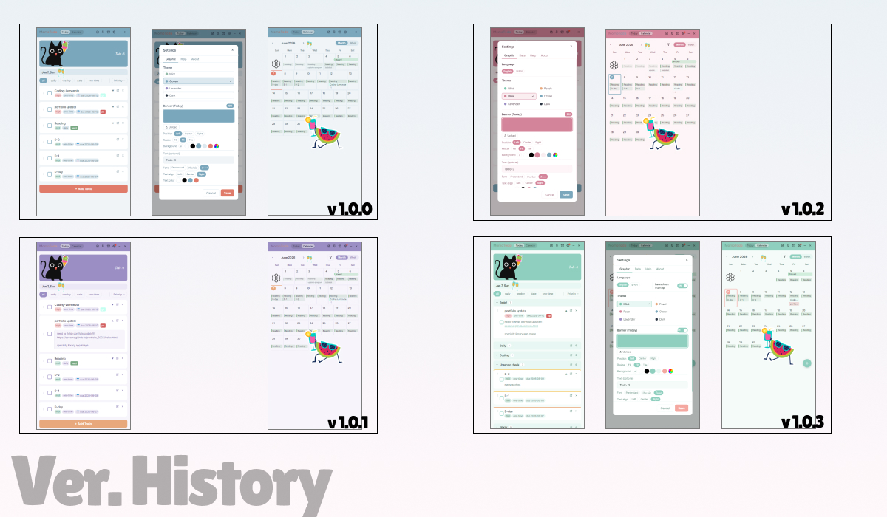
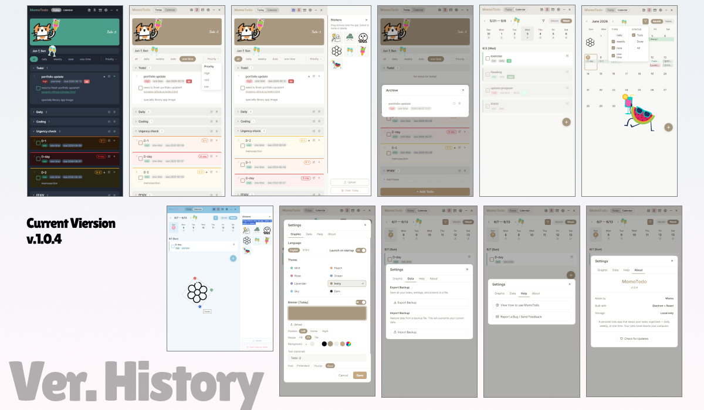

Momo Todo is a Windows desktop app built with Electron and React — designed to handle daily routines, recurring tasks, and deadlines all in one place. What started as a personal need grew into a fully featured app that has been tested by over 10 real users, iterated through multiple versions, and is still actively maintained. The entire development process was driven by Claude AI as a coding collaborator, making this project an exploration of what a designer with no formal engineering background can build when AI becomes part of the workflow.
Background · 01
Why I Built This
Most todo apps feel functional but impersonal — they're designed to be efficient, not to feel like yours. I wanted something that handled the complexity of different task types (daily habits, deadlines, one-off tasks) while also feeling like a space I actually wanted to open every day.
As a designer who wanted to move closer to implementation, I used Claude AI as a development partner throughout — describing what I wanted to build, iterating on the code, and learning as I went. The result is a fully working desktop app that I use daily and that others have now tested and given feedback on.
View on GitHub ↗

Fig.1: First sketch (feature list + flow notes) and second sketch (layout wireframe) — before writing any code
Design · 02
From Sketch to Interface
Before writing any code, I sketched the layout by hand to figure out information hierarchy and navigation structure. One of the earliest decisions was the icon — I explored multiple candidates before landing on the final mark, wanting something that felt personal rather than generic.

Fig.2: Icon candidates — exploring different directions before choosing the final mark

Fig.3: Today view, Calendar Month, and Calendar Week — the three main navigation states
Features · 03
Key Features
4 Task Types
Rather than a flat checklist, I designed four distinct task types to match how people actually manage their time. Each type has its own recurrence logic and completion tracking — stored per-date so history is never lost.
Daily — repeats every day
Weekly — repeats on selected days of the week
Date — active between a start and end date
One-time — single deadline task

Fig.4: Four task types — each with its own creation flow and display logic

Fig.5: Urgency visualization — 6 stages from D-4 (no indicator) through D-3, D-2, D-1, D-day, and Overdue — each with a distinct border color, badge, and background tint

Fig.6: 8 themes including dark mode — switchable instantly via CSS Variables, with click-to-preview before applying

Fig.7: Custom banner upload, sticker layer (draggable, resizable, per-page state), and memo with auto-linked URLs
UX · 04
Design Decisions
Several decisions in Momo Todo came from a deliberate design philosophy rather than technical defaults. Each one addresses a specific frustration with how most todo apps work.
"What you don't open is still information" — Urgency Visualization
The colored top border on each task card communicates deadline urgency at a glance. Six distinct stages — from D-4 (no indicator) through D-3, D-2, D-1, D-day, and Overdue — each with a progressively stronger border color, badge, and background tint. Deadline pressure is visible without opening a single task.
Archive instead of immediate delete
Clicking the × button on a task moves it to the Archive rather than deleting it immediately — accounting for accidental taps. From the archive, users can either restore the task or permanently delete it. Note: deleting daily/weekly tasks from the calendar view removes them directly (with in-app guidance), as the recurrence logic requires different handling.
The app as a personal space
Most todo apps are purely functional — and that's why people stop using them. Momo Todo adds customizable banner images, freely placeable stickers, and 8 themes so the app feels like a space the user has shaped themselves. When an app reflects your personality, you're more likely to keep coming back to it.
Memos as a resource layer
URLs in memos are automatically converted to clickable links and open in an external browser. This turns the memo field into a lightweight reference space rather than just a text box.
Theme preview before committing
An earlier version used hover to preview themes, which caused accidental switches. Changing it to click-to-preview eliminated the frustration while keeping the feature intuitive.
Testing · 05
User Testing & Iteration
After the initial release, I shared the app with 10+ users and collected feedback through real usage — not a formal test, but actual day-to-day use by people with different habits and workflows. Bugs surfaced, edge cases appeared, and missing features became obvious quickly.
Each version addressed a specific round of feedback. The app is currently at v1.0.6.
v1.0.0 — Initial Release
Daily, weekly, date, one-time task types · Priority levels · Custom labels · Drag & drop reordering · Calendar (month & week) · Archive & restore · Sticker system · Banner customization · 4 themes · Always on top
v1.0.1 – v1.0.2
Loading animation · Feedback email button · Sticker page isolation fix · Manual update check + notification dot · Korean/English language support · Calendar type filter · Export/Import data backup · Peach, Rose themes · Banner edit button shortcut · Theme hover preview
v1.0.3
Folder system with drag & drop · Alarm system (default + custom per task) · Label reuse · Memo URL links · Multi-memo expand · Calendar date span overlap fix · Sticker rotation handle
v1.0.4
Urgency badge + background color for due dates · Memo inline editing (double-click) · 2 new themes (Ivory, Sky — now 8 total) · Responsive modal width · Banner defaults to theme color · CSS refactored (2,161 → 1,397 lines)
v1.0.5
Calendar week view task deletion (Google Calendar-style options) · Folder reordering via drag & drop · Calendar filter persistence · ErrorBoundary crash screen · Dismissed alarm auto-cleanup · Alarm/timezone bug fixes
v1.0.6
Banner customization expanded — height, zoom, drag to reposition, new fonts (Playfair, Caveat, Dancing Script, Noto Serif), text size slider, vertical position · Date type "Repeat daily" option added · Daily/weekly edit with Google Calendar-style options (edit all / edit this and following) · Sticker drag improved — pixel-perfect movement, arrow key fine-tuning · One-time todos without due date now default to today

Fig.8: v1.0.0 → v1.0.3 — key visual and functional changes across early releases

Fig.9: v1.0.6 — full feature overview including urgency badges, themes, stickers, banner customization, archive, export/import, and settings
Next · 06
What's Next
v1.0.6 is live on Windows. macOS support was explored but paused — without trusted developer status, the app triggers a "file is damaged" warning on macOS, which requires an Apple Developer account to resolve. The focus going forward is on stability, new features, and eventually a mobile version.
Stability & bug check
Before new features, the priority is reviewing the existing codebase for potential conflicts, unused variables, and edge cases that could cause errors — building on the same mindset that led to the ErrorBoundary in v1.0.5.
v1.0.7 (exploring)
Alarm customization improvement — one-time tasks to support direct date + time input instead of relative "X hours before" · Today view completion filter (Todo / Done / All) · Simple weekly stats — completion rate and streaks · Widget / mini view — a small always-on-top window for quick task checks
Mobile version (longer term)
A mobile version is a longer-term goal — enabling cross-device task sharing via the existing Export/Import system so users can carry their list from desktop to mobile seamlessly.
Takeaway
Momo Todo changed how I think about the boundary between design and development. Using Claude AI as a coding collaborator, I was able to build something technically complex — drag-and-drop, native notifications, runtime theming, desktop packaging — without a formal engineering background. What mattered most wasn't knowing every API, but knowing what I wanted to build and being able to communicate it precisely. That clarity came from design thinking.
Real-user testing surfaced bugs I never would have caught on my own — edge cases, timing issues, crashes in situations I hadn't imagined. Watching that happen taught me that no matter how well you understand the design, the code has its own logic. To fix things confidently, I had to understand not just what each feature does, but how it flows and how changes in one place ripple through others. Building the ErrorBoundary — a dedicated crash screen with a report button — came directly from that realization: if something goes wrong, users need a way out, not a frozen white screen.
Every version made the app a little better. Seeing that progression — and knowing real people are using something I made — has been the most satisfying part of this project.